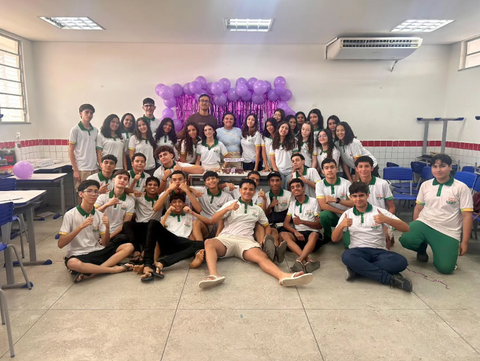
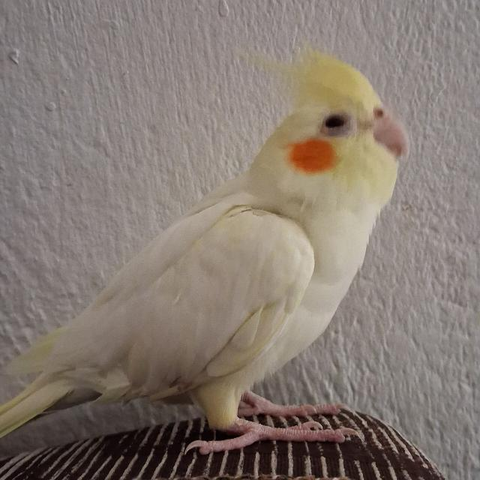
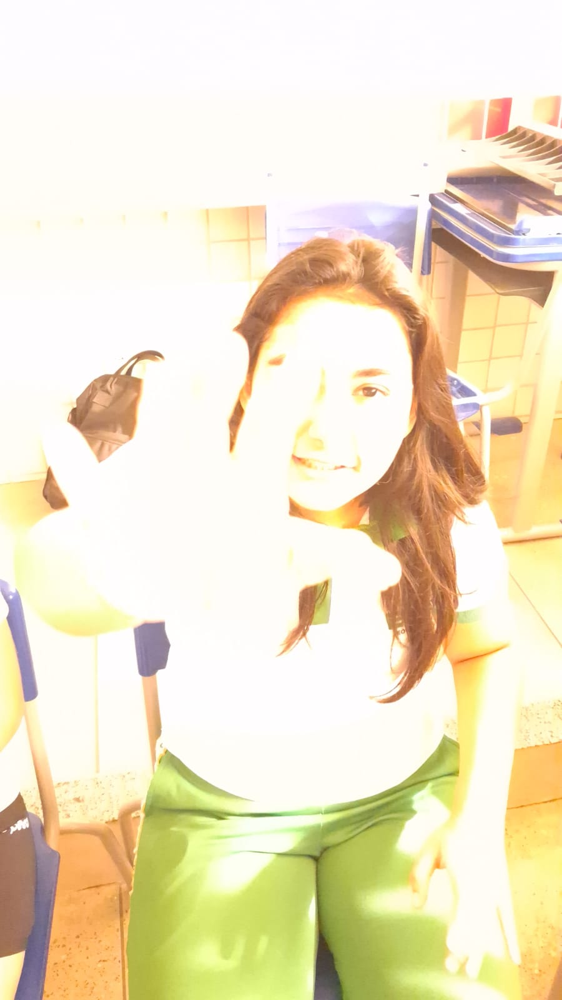
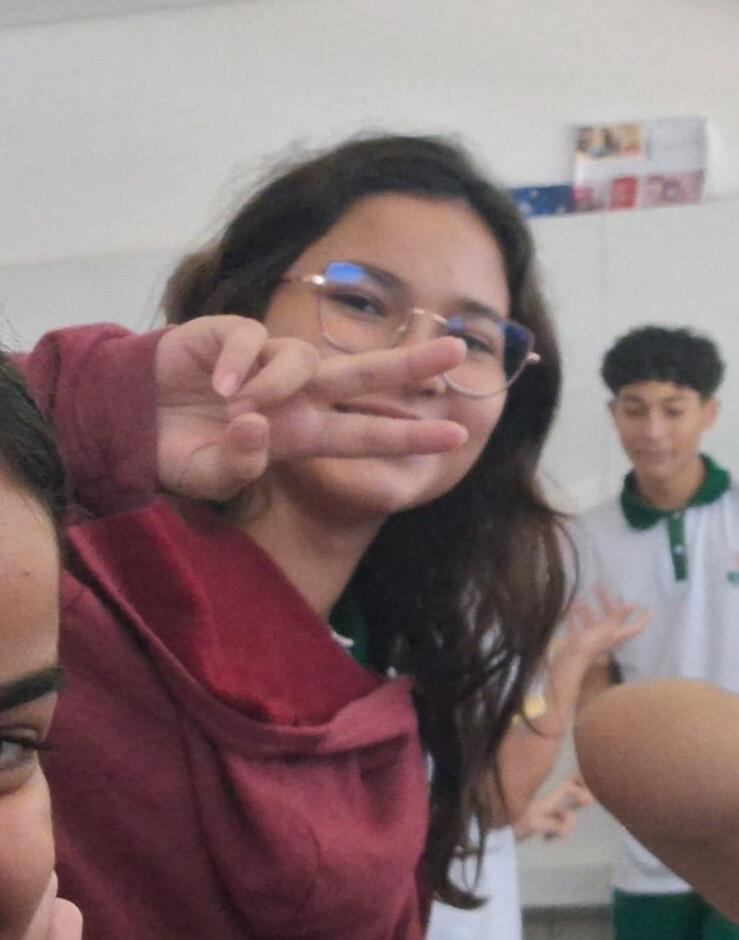
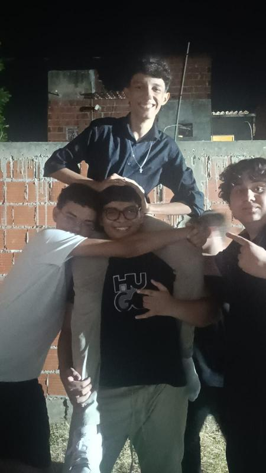
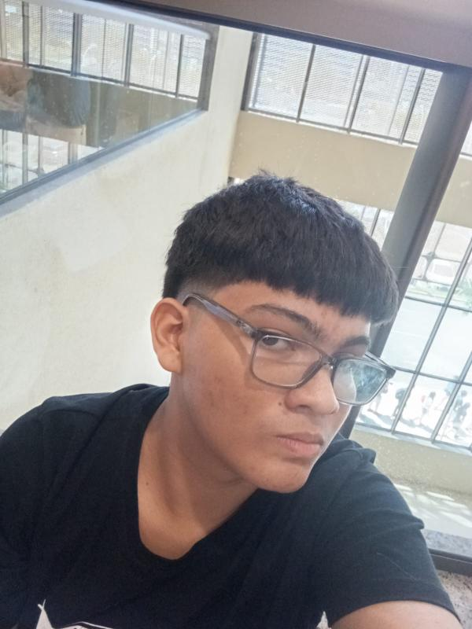

Nesta página, você encontrará meus amiguinhos! Espero que se divirta-se vendo as minhas histórias junto com eles!
Codes
Codigos não devem conter espaços nem acentos.
Informática

Essa ai é a minha segunda familia, a Informática! É nela que conheci vário amigos que tenho hoje (mesmo que recentes) e me tornei mais sociável. Ainda tenho mais 2 anos junto com eles e espero que sejam os melhores da minha vida!
Dica sobre o código: Qual o nome dos protagonistas do teatro da infor 1?
ATENAS

ATENAS é um grupo de amigos meus, onde a ideia inicial era fazer um site envolvendo o sus pra uma competição (Desafio Liga Jovem 3) mas infelizmente não conseguimos entregar a tempo. Ai, o grupo virou de conversas e jogos. Integrantes: Dafny, Ivens, Eduarda e Arthur.
Dica sobre o código: Qual o nome do projeto?
Filhos do bené

Os filhos do bené é um grupo de amigos meus que voltam pra casa no mesmo ônibus que eu. Essa hora da volta da escola, sem sombra de dúvidas, é uma das melhores do dia. Ir no fundão desse ônibus é risada garantida tendo como principais comediantes: Josué, Yuri, Guilherme, Felipe, Isaac, Diego e eu.
Dica sobre o código: O que todos deste ônibus somos?
Ivens

Esse ai é o Ivens, um cara muito maneiro que conheci na EEEP. Ivens é um cara muito inteligente e ama lógica (até demais). Ele nasceu em LG city, vulgo lagoa grande (Fim de mundo hein ivens). Ele é um dos caras mais inteligentes da informática e um dos meus melhores amigos. As vezes ivens chega pra mim com algumas ideias meio tortas como comer da mesma batata frita juntos, tipo o filme da dama e do vagabundo sabe? Ele diz que é pra matar a curiosidade, afirmando ser "apenas um bom curioso".
Dica sobre o código: O que ivens afirma ser?
Dafny

Essa ai é a Dafny, uma garota gente boa que conheci na EEEP. Dafny ama gatinhos (principalmente os explosivos), ela até tem um que se chama Maximelo. Ela é super inteligente e as vezes estressada comigo sem motivo... Ela é tipo a irmã mais velha do grupo. Aliás, nunca pergunte a dafny se fazer 3 dedos com a mão significa alternativa C ou E. Dafny se considera uma bactéria trevosa e diz odiar homens no geral.
Dica sobre o código: O que dafny se considera?
Eduarda

Eduarda é uma simples camponesa do sitio canto que adora ver animes de machos musculosos brigando entre si (Jojo) além de gostar de ver pessoas sentadas numa mesa enquanto rolam dados, á procura da "ordem parar no mal". Mesmo com essas coisas, Eduarda é muito legal e é minha parceira de jogatina no roblox quando o Ivens resolve me abandonar.... Ela está absurdamente ansiosa pela parte 7 de Jojo, mas diz que seu stand favorito é de um tal de Bucciarati na parte 5.
Dica sobre o código: Qual é mesmo o nome do stand do Bucciarati?
Guilherme

Guilherme é um cara que entrou na minha vida mandando eu melhorar e agora nunca mais saiu de perto, cara chato cara! KKKKKKKKKKKKKKKKKKKKKKKKK, brincadeirinhas a parte, guilherme é um cara legal pra caramba que virou basicamente um irmão pra mim hoje em dia. Se eu tô numa merda na várzea alegre, é quase certeza que ele ta junto e estamos rindo pra caramba da situação KKKKKKKKKKKKKKK. Nos zuamos? Sim, mas é brincadeirinha pô! FICA DE OLHO NO GATO SE NÃO ELE VAI COMER O PEIXE GUILHERME!
Dica sobre o código: Em quem guilherme tem que ficar de olho?
Josué

Esse elefante na foto é o Josué (ou joshua pros mais intimos) e cara, pode juntar as maiores comediantes do planeta que com certeza eles não vão me fazer rir como esse cara faz KKKKKKKKKKKKKKKKKKKKK. Teve um dia que eu estava com dor de barriga e tive que ir pra casa no ônibus e é sério, eu quase me caguei de tanto rir KKKKKKKKKKKKK. É incrivel como ele te faz sorrir mesmo nos piores momentos e o cara ainda tem bom gosto musical (#MFDOOM). Não sei como as molieres o rejeitam, ele é tão lindo com esses olhinhos... Um salve pra assucena e pro pedro (e pra clóris também KKKKKKKKKKKKKKK).
Dica sobre o código: Levando em consideração a maneira que classificamos os cachorros, josué e guilherme são da mesma?